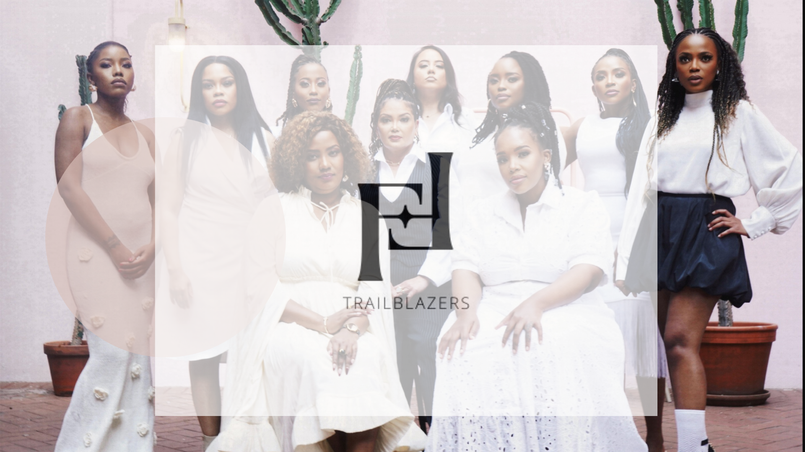
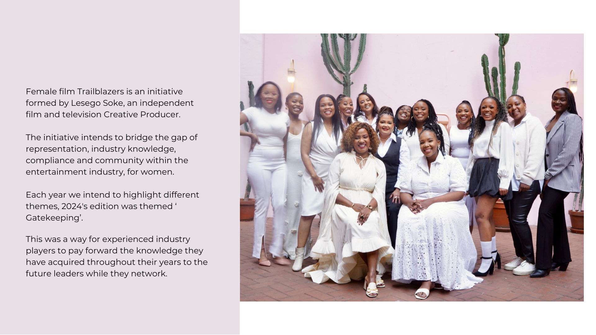
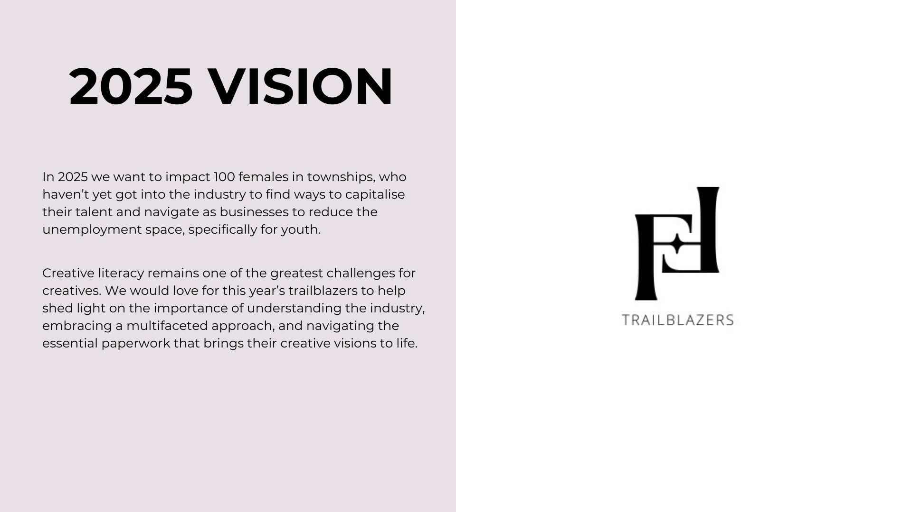
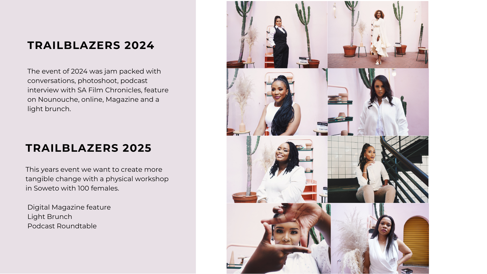

Female Film Trailblazers
Empowering women in the film industry through quarterly webinars, annual seminars, and curated networking opportunities. We connect emerging and established filmmakers to share knowledge, inspire growth, and build lasting industry connections.




